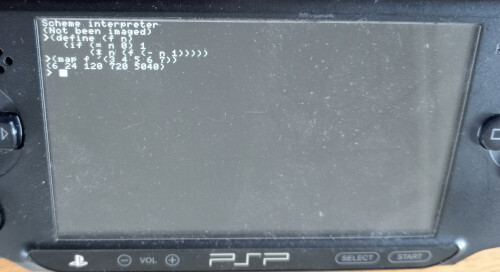

Scheme for PSP
I started fiddling with PSP homebrew and, thinking about the Scheme interpreter which I had written in RISC-V assembly for my Scratch RISC-V emulator around early 2022, started wondering how similar MIPS assembly would be to RISC-V assembly, or if it would even be possible to get it to assemble with little more than a few substitutions… and much to my surprise, this was actually possible.
I replaced all instances of mv with move,
call with jal, lla with
la, ret with jr $ra, etc.; and
changed the registers where needed (adding dollar signs), after
which it, to my excitement, assembled to an object file fine (without
linking or working, obviously). From there it wasn't very long till
I got something that started working on PSP with pspsdk's debug
screen. As of now, though, the original being written, obviously,
with RISC-V in mind, the interpreter's own routines don't respect the
MIPS calling convention; more specifically $a0 is used
for return values as well as arguments and $v0 isn't
taken advantage of at all. From there I've started expanding it,
with more features hopefully to come.
More information on GitHub.
For now, the library goes in /boot.scm on the memory stick.
I thought about also running it as a program under a Unix-like system
on MIPS. So I subsequently tried compiling for NetBSD under gxemul,
but for some reason only got it to work by compiling with
-fno-pic and using syscall instead of any
library calls. So for now I will probably ignore platforms other than
PSP.